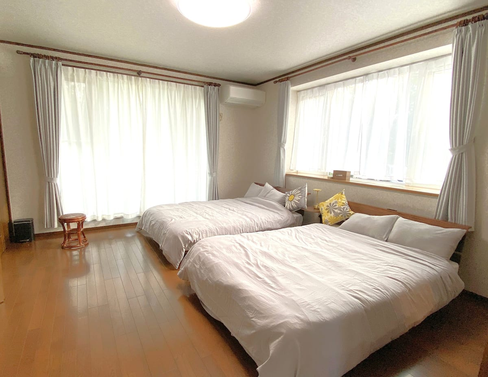
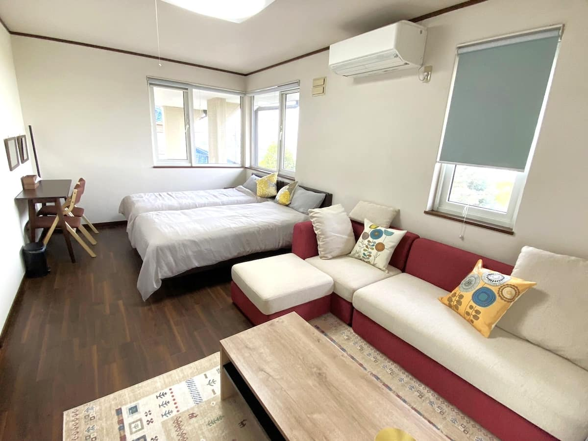
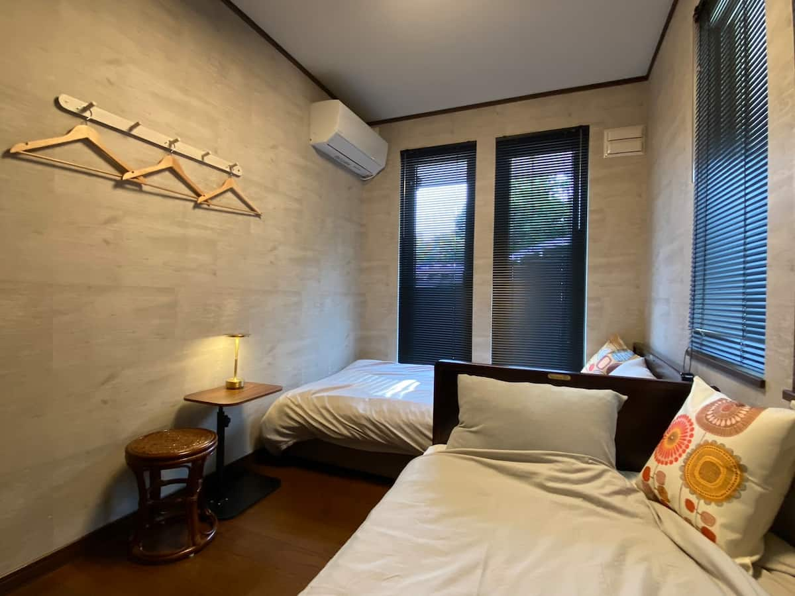
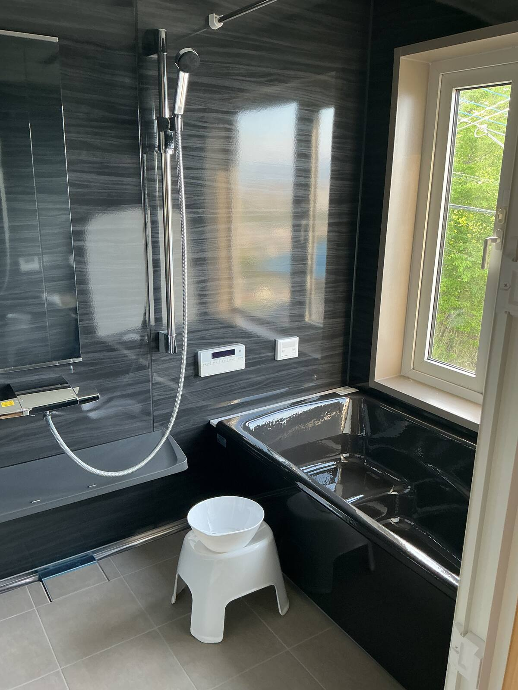
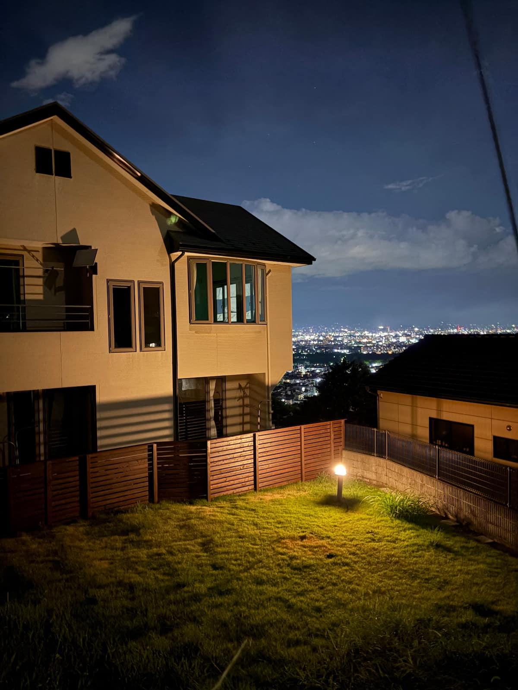

リビング・ダイニング

- 広々としたリビング・ダイニングから、高崎の街並みを一望
- yogibo・ソファ・カウチソファを設置。お好きな場所でお寛ぎいただけます
- BALMUDAスピーカー（Bluetooth対応）、CD・USB対応ミュージックプレーヤー
- ダイニングテーブル（チェア8脚）
寝室（3部屋・ベッド6台）



- ダブルルーム（2階）：ダブルベッド2台
- サータルーム（1階）：シングルベッド2台（サータ製マットレス）
- シモンズルーム（1階）：シングルベッド2台（シモンズ製マットレス）
- 快適な宿泊人数の目安は6名（お子様を含めると8名程度まで）
バスルーム・設備

- 黒を基調とした広々としたバスルーム
- 洗濯乾燥機・アイロン・ドライヤー完備
- シャンプー・コンディショナー・ボディソープ（宿泊セットもご用意）
- 冷蔵冷凍庫・電子レンジ・調理器具一式・食器類
駐車場・裏庭

- 建物1階に駐車スペース2台、徒歩約30mの場所にさらに2台（計4台）
- フェンスで囲まれた専用の裏庭
- 夜になると庭のライトが自動点灯し、夜景が美しく浮かび上がります
アクセス
- JR高崎駅から車で10分
- 関越道・高崎ICから車で約20分
- 周辺にカフェ・飲食店・コンビニ・スーパーあり